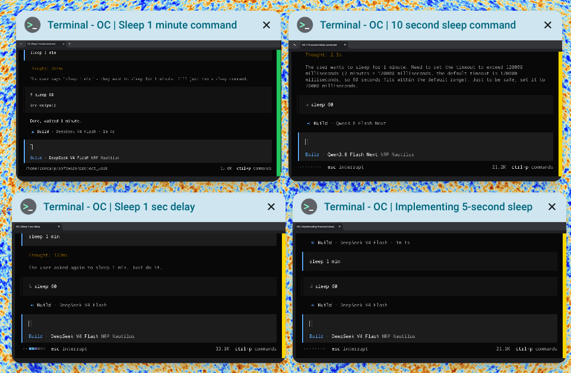

Running several AI coding agents in separate ChromeOS Crostini terminals makes it easy to lose track of which one is still busy. Desktop notifications only tell you when something finishes, not which window to look at. This post shows how to color-code each terminal window’s right edge so ChromeOS Overview tells you the status of every agent at a glance: a thin colored bar on the right of each window.

How it works
ChromeOS terminals use hterm, which supports two escape sequences:
OSC 11sets the default background colorOSC 111resets it to the terminal default
The background shows as a thin bar on the right of each window because the agent terminal UIs paint their own dark screen; only the unpainted right margin keeps the terminal background. In ChromeOS Overview the bar is clearly visible on each thumbnail, so you can scan all your agent windows at a glance.
Agents like Claude Code, Codex, and opencode can run hooks when a turn starts and finishes. Each hook calls a small helper, agent-state, that writes the right escape sequence to the host terminal. The helper has to find the terminal even when the hook runs with stdin and stdout piped (no tty), so it walks up the process tree until it finds the tty that launched the agent.
Install the helper
The helper is a single bash script, available in the gist:
curl -fsSL https://gist.githubusercontent.com/zonca/900fa78ad943a971485d1affad82f291/raw/agent-state -o ~/.local/bin/agent-state
chmod +x ~/.local/bin/agent-stateUsage: agent-state <working|done|waiting|error|reset> [agent-name]. Colors are configurable through AGENT_STATE_WORKING_COLOR, AGENT_STATE_DONE_COLOR, and AGENT_STATE_ERROR_COLOR.
The full source of agent-state and the opencode plugin are in this GitHub Gist:
Wire up your agents
opencode
opencode loads plugins from ~/.config/opencode/plugins/. Add the plugin agent-status.js (second file in the gist): the session status events set the bar gold while the model is generating, green when the session becomes idle, red on a session error.
Claude Code
Add these hooks to ~/.claude/settings.json. The SessionStart hook paints the window dark red immediately, UserPromptSubmit switches to orange while working, Stop returns it to red, and SessionEnd resets to black when you quit:
{
"hooks": {
"SessionStart": [
{ "hooks": [{ "type": "command", "command": "AGENT_STATE_FORCE=1 AGENT_STATE_DONE_COLOR=#7f1d1d /home/zonca/.local/bin/agent-state done claude" }] }
],
"UserPromptSubmit": [
{ "hooks": [{ "type": "command", "command": "AGENT_STATE_WORKING_COLOR=#8a4a00 /home/zonca/.local/bin/agent-state working claude" }] }
],
"Stop": [
{ "hooks": [{ "type": "command", "command": "AGENT_STATE_DONE_COLOR=#7f1d1d /home/zonca/.local/bin/agent-state done claude" }] }
],
"SessionEnd": [
{ "hooks": [{ "type": "command", "command": "/home/zonca/.local/bin/agent-state reset claude" }] }
]
}
}Codex
Put hooks.json in ~/.codex/hooks.json (the first time Codex shows the hooks, review and trust them with /hooks):
{
"hooks": {
"UserPromptSubmit": [{ "hooks": [{ "type": "command", "command": "/home/zonca/.local/bin/agent-state working codex", "async": true }] }],
"Stop": [{ "hooks": [{ "type": "command", "command": "/home/zonca/.local/bin/agent-state done codex", "async": true }] }]
}
}Antigravity CLI (agy)
The agy CLI reads user hooks from ~/.gemini/config/hooks.json and uses the same JSON shape without the extra hooks grouping:
{
"agent-status": {
"PreInvocation": [{ "type": "command", "command": "AGENT_STATE_WORKING_COLOR=#4a4200 /home/zonca/.local/bin/agent-state working antigravity" }],
"Stop": [{ "type": "command", "command": "AGENT_STATE_DONE_COLOR=#333333 /home/zonca/.local/bin/agent-state done antigravity" }]
}
}Reset the background when the TUI exits
When a terminal UI exits, the shell takes over the window and the colored background would cover the whole terminal. Add wrappers to ~/.bashrc so each agent resets the background when it quits:
agy() { command agy "$@"; agent-state reset; }
opencode() { command opencode "$@"; agent-state reset; }
codex() { command codex "$@"; agent-state reset; }Color scheme used here
| Agent | Working | Done | On exit |
|---|---|---|---|
| opencode | gold #ffd700 bar |
green #22c55e bar |
black |
| Claude Code | dark orange #8a4a00 |
dark red #7f1d1d |
black |
| Codex | gold #ffd700 |
green #22c55e |
black |
| Antigravity (agy) | dark olive #4a4200 |
dark grey #333333 |
black |
The background is a single color for the whole window, so agents that do not paint an opaque UI (like agy) get a subtler full-window tint instead of a bar.
Test it
- Start each agent in its own terminal window.
- Give it a task that takes a while, for example:
Run "sleep 15 && echo done" in your terminal. - Open ChromeOS Overview: the bar is gold while the agent works, and turns green (or the configured done color) when it finishes.
- Quit the agent: the window returns to the default black background.
Helper source is also available in the gist above.